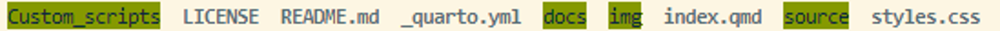
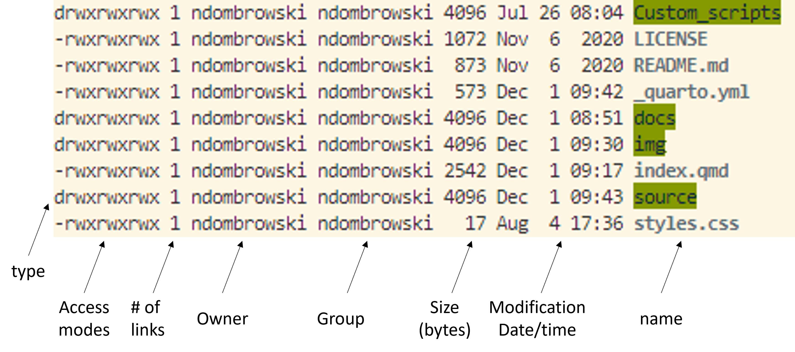
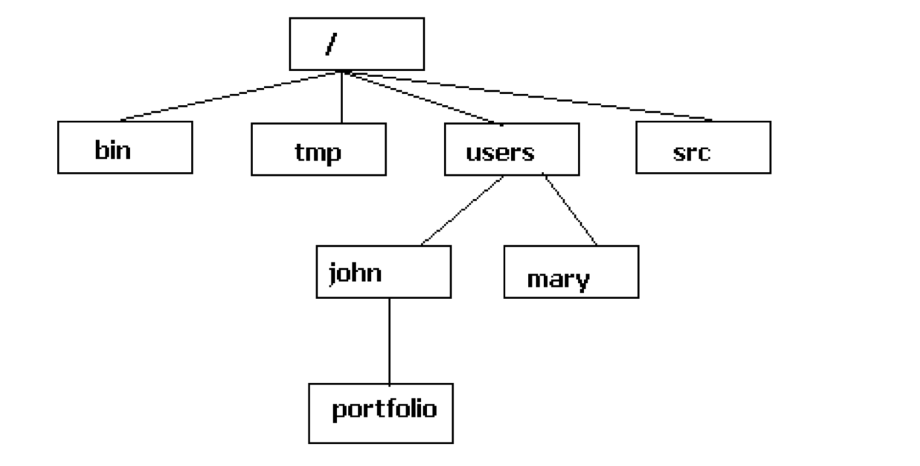

pwdIntroduction to Bash
pwd: Finding out where we are
After installing the terminal, let’s orient ourselves by typing our first command, pwd, into the terminal and pressing enter. pwd prints the location of the current working directory and basically tells you where exactly you are.
When we login we start from what is called our home directory.
Tip: finding the desktop on different user systems
Your home directory will be something like /Users/YourUserName but might be slightly different depending on your operating system. Below you find some help to orient yourself better for different terminal interfaces:
For MAC users:
- The home directory should be
/Users/YourUserName - To access the current folder in Finder you can try using
open . - Your desktop should be here
/Users/YourUserName/Desktop
For Mobaxterm users:
- Your home directory is
/home/mobaxterm - By default this home directory is in the Temp folder, which gets deleted evertime you exit Mobaxterm, To give this a persistent home, do the following:
- Settings –> Configuration –> General
- In there set Persistent home directory to a folder of your choice
- To access the file explorer and get used to where you are you can type
explorer.exe . - The path to the desktop would be something like this
/mnt/c/Users/YourUserName/OneDrive/Desktopor/mnt/c/Users/YourUserName/Desktop
For WSL2 users:
- The home directory is
/home/YourUserName - To access the file explorer and get used to where you are you can type
explorer.exe . - You see that the Ubuntu environment is launched separated from your Windows environment
- The path to the desktop would be something like this
/mnt/c/Users/YourUserName/OneDrive/Desktopor/mnt/c/Users/YourUserName/Desktop
ls: List the content of a directory
Now that we know where we are, let’s see how to move around by first seeing what files and folders exist in our home directory. For this we can use the ls command, which stands for list directory contents:
lsIn my case this returns something like this:

This might look a bit different for your system in terms of color for file/folder names but what we basically see are the files (in bold text) and folders (green-highlighted text).
The structure of a command
Since this can easily become over-whelming if we deal with a lot of files and folders, lets look a bit closer into how we can optimize our commands.
Let´s start with looking at the general structure of a command:
Now, let’s look a bit closer into the ls command and use it with an option -l, an option we can use that makes ls use a long listing format.
ls -lAfter running this, we should see our files and folders but in what is called the long format (which gives more detailed information and structures our output a bit better):

If you are unsure what options come with a program its always a good idea to check out the manual. You can do this with:
man lsYou can exit the manual by pressing q.
In case you want to check what a program does or what options there are, depending on the program there might be different ways how to do this. These most common ways are:
man lsls --helpls -h
cd: Moving around folders
Most of the time you do not want to perform your analyses in the home directory but elsewhere. We can use the cd command to move around the file system.
The Unix file system is a hierarchical file system to organize files and directories. It is a tree-like structure that starts with a single directory called the root directory, which is denoted by a forward slash (/) character. All other files are “descendants” of root. To move from the root, we can go via the descendants to reach the john folder as follows: /users/john

For our analyses, we will move into any of the folders that we see listed after we have used ls -l. In my case I want to move into the source directory:
cd source/If you use pwd afterwards, then you should see that we moved into another directory.
We can also move back to our original directory using cd .., which will move the user up one directory (and move us out of the source and back into the home directory).
cd ..We can also move around multiple levels. In the example below, I am going into the source folder, then back to the home directory and then into the docs folder.
cd source/../docsAnother useful way to move around quickly is using the tilde symbol, i.e. ~, which can be used as a shortcut to move directly into our home directory:
cd ~
Exercise
Explore your current location with pwd and ls and move around with cd and try to get used to these three commands. If you are more comfortable, try finding your Deskop based on the tips in the section introducing pwd